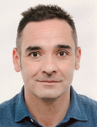

Para más detalles sobre mi trayectoria académica, investigación y docencia, puedes consultar mi perfil oficial en la UAH:
Esta página reúne materiales docentes y repositorios desarrollados para distintas asignaturas del área de Electrónica impartidas en la Universidad de Alcalá (UAH). Incluye ejercicios, proyectos, guías de laboratorio, simulaciones, diseños PCB y vídeos explicativos.

Para más detalles sobre mi trayectoria académica, investigación y docencia, puedes consultar mi perfil oficial en la UAH:
Acceso directo a materiales y recursos prácticos. Cada asignatura incluye ejercicios, proyectos, guías de laboratorio y más.
Diseño de sistemas digitales con VHDL, lógica combinacional y secuencial, implementación en FPGA y simulación con testbenches.
Ejercicios y proyectos de diseño electrónico digital y analógico, incluyendo herramientas como Quartus, ModelSim y simuladores.
Material introductorio: análisis de circuitos, componentes, leyes de Ohm y Kirchhoff, amplificadores, filtros y fundamentos digitales.
Electrónica aplicada: prácticas de laboratorio, diseño de PCB, simulaciones (LTspice), prototipado y validación experimental.
Electrónica en entornos forenses: análisis de señales, recuperación de evidencias, instrumentación avanzada y documentación técnica.
Acceso rápido al conjunto completo de recursos (web) y al repositorio principal.
Imparto docencia en los siguientes programas de Grado:
Si quieres agendar una reunión o tutoría, puedes reservar un hueco aquí:
Consejo: indica la asignatura y el tema para poder preparar la sesión.
This page gathers teaching materials and repositories developed for several Electronics courses at the University of Alcalá (UAH). You will find exercises, projects, lab guides, simulations, PCB designs, and explanatory videos.
For more details about my academic background, research, and teaching activities, you can visit my official profile:
Direct access to course materials and practical resources.
Digital system design using VHDL, combinational and sequential logic, FPGA implementation, and testbench-based simulation.
Exercises and projects on digital and analog electronic design, including tools such as Quartus, ModelSim, and simulators.
Introductory material on circuit analysis, basic components, Ohm/Kirchhoff laws, amplifiers, filters, and digital fundamentals.
Applied electronics: lab practices, PCB design, LTspice simulations, prototyping, and experimental validation.
Electronics for forensic contexts: signal analysis, evidence recovery, advanced instrumentation, and technical documentation.
Quick access to the web version and the main repository.
I currently teach in the following Bachelor’s programmes:
If you would like to schedule a meeting or tutoring session, you can book a time slot here:
Tip: Include the course name and topic so I can prepare in advance.